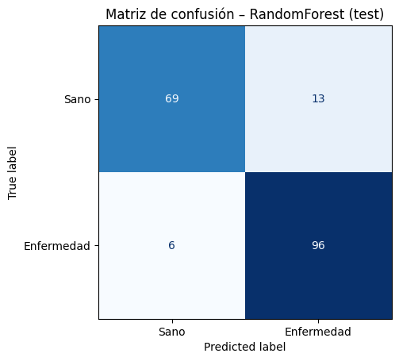
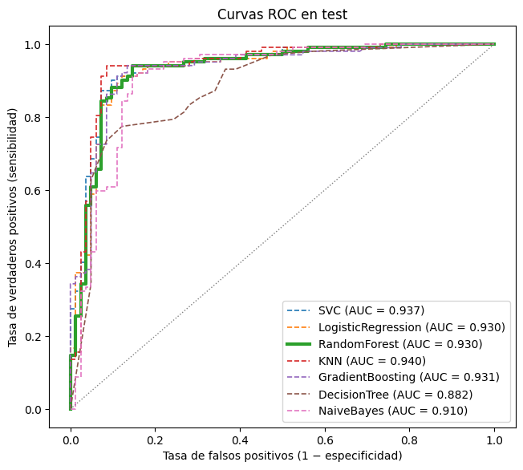
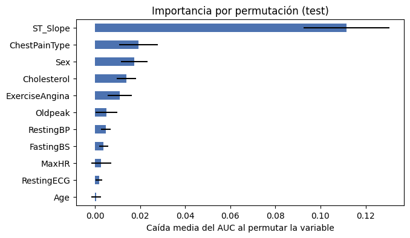

5. Etapa 2 · Modelado con validación segura, exportación del modelo y monitoreo#
Este cuaderno contiene:
División de los datos antes del escalado.
Pipeline+GridSearchCVcon validación cruzada estratificada.Evaluación del modelo elegido: matriz de confusión, curva ROC y AUC.
Exportación del modelo para la API (Etapa 3).
Reporte de deriva de datos con Evidently (Etapa 6).
import sys # Acceso a la configuración del intérprete de Python
sys.path.insert(0, "..") # Agrega la carpeta raíz del proyecto para poder importar el paquete src
import shutil # Copia de archivos
import warnings # Control de mensajes de advertencia
import joblib # Guardado y carga del modelo entrenado
import numpy as np # Cálculo numérico
import pandas as pd # Manejo de tablas de datos
import matplotlib.pyplot as plt # Creación de gráficos
from sklearn.inspection import permutation_importance # Importancia de variables por permutación
from sklearn.metrics import ConfusionMatrixDisplay, classification_report, confusion_matrix, roc_auc_score, roc_curve # Métricas y gráficos de evaluación
from evidently.metric_preset import DataDriftPreset # Conjunto de métricas de deriva de datos de Evidently
from evidently.report import Report # Generador de reportes de Evidently
from src import modelado as mod # Funciones reutilizables del proyecto
warnings.filterwarnings("ignore") # Oculta advertencias que no afectan los resultados
pd.set_option("display.width", 160) # Ancho de impresión de las tablas
5.1. 1. División de los datos antes de cualquier transformación#
X, y = mod.cargar_datos() # Carga las 11 variables clínicas y el objetivo HeartDisease
X_train, X_test, y_train, y_test = mod.dividir_datos(X, y) # Partición 80/20 estratificada con semilla fija
print(f"Train: {X_train.shape[0]} pacientes ({y_train.mean():.1%} con enfermedad)") # Tamaño y balance del conjunto de entrenamiento
print(f"Test: {X_test.shape[0]} pacientes ({y_test.mean():.1%} con enfermedad)") # Tamaño y balance del conjunto de prueba
Train: 734 pacientes (55.3% con enfermedad)
Test: 184 pacientes (55.4% con enfermedad)
El conjunto de prueba queda apartado desde este momento. La mediana para imputar, los mínimos y máximos del escalado y las categorías del one-hot se aprenden solo con train (y, dentro de la validación cruzada, solo con los pliegues de entrenamiento).
5.2. 2. Pipeline + GridSearchCV#
El Pipeline tiene dos pasos: prep (preprocesamiento) y clf (clasificador).
mod.construir_preprocesador() # Muestra el diagrama del preprocesador: imputación de ceros, escalado MinMax y one-hot
ColumnTransformer(transformers=[('ceros',
Pipeline(steps=[('imputar',
SimpleImputer(add_indicator=True,
missing_values=0,
strategy='median')),
('escalar', MinMaxScaler())]),
['RestingBP', 'Cholesterol']),
('numericas', MinMaxScaler(),
['Age', 'FastingBS', 'MaxHR', 'Oldpeak']),
('categoricas',
OneHotEncoder(handle_unknown='ignore'),
['Sex', 'ChestPainType', 'RestingECG',
'ExerciseAngina', 'ST_Slope'])])In a Jupyter environment, please rerun this cell to show the HTML representation or trust the notebook. On GitHub, the HTML representation is unable to render, please try loading this page with nbviewer.org.
ColumnTransformer(transformers=[('ceros',
Pipeline(steps=[('imputar',
SimpleImputer(add_indicator=True,
missing_values=0,
strategy='median')),
('escalar', MinMaxScaler())]),
['RestingBP', 'Cholesterol']),
('numericas', MinMaxScaler(),
['Age', 'FastingBS', 'MaxHR', 'Oldpeak']),
('categoricas',
OneHotEncoder(handle_unknown='ignore'),
['Sex', 'ChestPainType', 'RestingECG',
'ExerciseAngina', 'ST_Slope'])])['RestingBP', 'Cholesterol']
SimpleImputer(add_indicator=True, missing_values=0, strategy='median')
MinMaxScaler()
['Age', 'FastingBS', 'MaxHR', 'Oldpeak']
MinMaxScaler()
['Sex', 'ChestPainType', 'RestingECG', 'ExerciseAngina', 'ST_Slope']
OneHotEncoder(handle_unknown='ignore')
ranking, busquedas = mod.comparar_modelos(X_train, y_train, X_test, y_test) # Entrena los siete modelos con validación cruzada de 5 pliegues
ranking[["modelo", "auc_cv", "auc_test", "accuracy_test", "recall_test", "mejores_parametros"]].round(4) # Ranking por AUC de validación cruzada
File "C:\DanielSR\Projects\proyecto_heart_disease\.venv\lib\site-packages\joblib\externals\loky\backend\context.py", line 257, in _count_physical_cores
cpu_info = subprocess.run(
File "C:\Users\user-pc\.conda\envs\ml_venv\lib\subprocess.py", line 505, in run
with Popen(*popenargs, **kwargs) as process:
File "C:\Users\user-pc\.conda\envs\ml_venv\lib\subprocess.py", line 951, in __init__
self._execute_child(args, executable, preexec_fn, close_fds,
File "C:\Users\user-pc\.conda\envs\ml_venv\lib\subprocess.py", line 1436, in _execute_child
hp, ht, pid, tid = _winapi.CreateProcess(executable, args,
| modelo | auc_cv | auc_test | accuracy_test | recall_test | mejores_parametros | |
|---|---|---|---|---|---|---|
| posicion | ||||||
| 1 | RandomForest | 0.9345 | 0.9304 | 0.8967 | 0.9412 | {'clf__max_depth': None, 'clf__min_samples_lea... |
| 2 | GradientBoosting | 0.9295 | 0.9306 | 0.9076 | 0.9412 | {'clf__learning_rate': 0.05, 'clf__max_depth':... |
| 3 | LogisticRegression | 0.9287 | 0.9304 | 0.8859 | 0.9216 | {'clf__C': 1} |
| 4 | SVC | 0.9269 | 0.9374 | 0.8804 | 0.9216 | {'clf__C': 1, 'clf__gamma': 0.1} |
| 5 | KNN | 0.9245 | 0.9402 | 0.9130 | 0.9412 | {'clf__n_neighbors': 31, 'clf__weights': 'dist... |
| 6 | NaiveBayes | 0.9151 | 0.9099 | 0.8859 | 0.9118 | {'clf__var_smoothing': 1e-09} |
| 7 | DecisionTree | 0.9087 | 0.8821 | 0.7772 | 0.8137 | {'clf__max_depth': 5, 'clf__min_samples_leaf':... |
nombre_mejor = ranking.iloc[0]["modelo"] # Modelo con mayor AUC de validación cruzada (elegido SIN mirar el test)
grid_mejor = busquedas[nombre_mejor] # Búsqueda ajustada de ese modelo
modelo_final = grid_mejor.best_estimator_ # Pipeline completo (preprocesamiento + clasificador) reentrenado con todo train
print(f"Modelo elegido: {nombre_mejor}") # Nombre del modelo ganador
print(f"Hiperparámetros: {grid_mejor.best_params_}") # Hiperparámetros ganadores
print(f"AUC de validación cruzada: {grid_mejor.best_score_:.4f}") # Desempeño estimado con train
detalle = pd.DataFrame(grid_mejor.cv_results_)[["params", "mean_test_score", "std_test_score", "rank_test_score"]] # Resultado de cada combinación de hiperparámetros
detalle.sort_values("rank_test_score").head(5) # Las cinco mejores combinaciones
Modelo elegido: RandomForest
Hiperparámetros: {'clf__max_depth': None, 'clf__min_samples_leaf': 5, 'clf__n_estimators': 300}
AUC de validación cruzada: 0.9345
| params | mean_test_score | std_test_score | rank_test_score | |
|---|---|---|---|---|
| 11 | {'clf__max_depth': None, 'clf__min_samples_lea... | 0.934465 | 0.028179 | 1 |
| 10 | {'clf__max_depth': None, 'clf__min_samples_lea... | 0.934311 | 0.027869 | 2 |
| 7 | {'clf__max_depth': 8, 'clf__min_samples_leaf':... | 0.933567 | 0.027464 | 3 |
| 6 | {'clf__max_depth': 8, 'clf__min_samples_leaf':... | 0.933301 | 0.026512 | 4 |
| 2 | {'clf__max_depth': 4, 'clf__min_samples_leaf':... | 0.932732 | 0.028395 | 5 |
5.3. 3. Evaluación en el conjunto de prueba#
5.3.1. AUC y reporte de clasificación#
proba_test = modelo_final.predict_proba(X_test)[:, 1] # Probabilidad de enfermedad para cada paciente de test
pred_test = modelo_final.predict(X_test) # Clase predicha con umbral 0.5
auc_test = roc_auc_score(y_test, proba_test) # Área bajo la curva ROC en test
print(f"AUC en test: {auc_test:.4f}\n") # Reporta el AUC
print(classification_report(y_test, pred_test, target_names=["Sano (0)", "Enfermedad (1)"])) # Precisión, recall y F1 por clase
AUC en test: 0.9304
precision recall f1-score support
Sano (0) 0.92 0.84 0.88 82
Enfermedad (1) 0.88 0.94 0.91 102
accuracy 0.90 184
macro avg 0.90 0.89 0.89 184
weighted avg 0.90 0.90 0.90 184
5.3.2. Matriz de confusión#
matriz = confusion_matrix(y_test, pred_test) # Tabla de aciertos y errores: filas = clase real, columnas = clase predicha
ConfusionMatrixDisplay(matriz, display_labels=["Sano", "Enfermedad"]).plot(cmap="Blues", colorbar=False) # Dibuja la matriz
plt.title(f"Matriz de confusión – {nombre_mejor} (test)") # Título
plt.grid(False) # Quita la cuadrícula superpuesta
plt.show() # Muestra el gráfico
tn, fp, fn, tp = matriz.ravel() # Extrae las cuatro celdas
print(f"Verdaderos negativos: {tn} | Falsos positivos: {fp} | Falsos negativos: {fn} | Verdaderos positivos: {tp}") # Resumen numérico
print(f"Sensibilidad (recall): {tp / (tp + fn):.3f} | Especificidad: {tn / (tn + fp):.3f}") # Tasas de detección de enfermos y de sanos

Verdaderos negativos: 69 | Falsos positivos: 13 | Falsos negativos: 6 | Verdaderos positivos: 96
Sensibilidad (recall): 0.941 | Especificidad: 0.841
5.3.3. Curva ROC#
fig, ax = plt.subplots(figsize=(7.5, 6.5)) # Figura para las curvas ROC
for nombre, grid in busquedas.items(): # Recorre los siete modelos
p = grid.predict_proba(X_test)[:, 1] # Probabilidades del modelo en test
fpr, tpr, _ = roc_curve(y_test, p) # Tasas de falsos y verdaderos positivos para cada umbral
grosor, estilo = (3, "-") if nombre == nombre_mejor else (1.2, "--") # Resalta el modelo elegido
ax.plot(fpr, tpr, lw=grosor, ls=estilo, label=f"{nombre} (AUC = {roc_auc_score(y_test, p):.3f})") # Dibuja la curva del modelo
ax.plot([0, 1], [0, 1], color="gray", lw=1, ls=":") # Diagonal de referencia (clasificador al azar)
ax.set_xlabel("Tasa de falsos positivos (1 − especificidad)") # Eje X
ax.set_ylabel("Tasa de verdaderos positivos (sensibilidad)") # Eje Y
ax.set_title("Curvas ROC en test") # Título
ax.legend(loc="lower right") # Leyenda con el AUC de cada modelo
plt.show() # Muestra el gráfico

5.3.4. ¿Qué variables usa el modelo?#
Importancia por permutación en test: cuánto cae el AUC al desordenar cada variable.
imp = permutation_importance(modelo_final, X_test, y_test, scoring="roc_auc", n_repeats=30, random_state=mod.SEMILLA) # Permuta cada variable 30 veces y mide la caída de AUC
importancia = pd.DataFrame({"media": imp.importances_mean, "desv": imp.importances_std}, index=X_test.columns).sort_values("media") # Caída media de AUC y su desviación por variable
importancia["media"].plot.barh(figsize=(7, 4), color="#4C72B0", xerr=importancia["desv"]) # Barras horizontales con barra de error
plt.xlabel("Caída media del AUC al permutar la variable") # Eje X
plt.title("Importancia por permutación (test)") # Título
plt.show() # Muestra el gráfico

Interpretación de la evaluación.
Modelo elegido: RandomForest (300 árboles, hojas de al menos 5 pacientes), con AUC de validación cruzada 0,9345 ± 0,028. En test obtiene AUC = 0,930, casi idéntico: la validación cruzada estimó bien el desempeño y no hay señales de sobreajuste.
Matriz de confusión (184 pacientes): 96 verdaderos positivos, 69 verdaderos negativos, 13 falsos positivos y 6 falsos negativos. La sensibilidad es 94,1 % (detecta 96 de 102 enfermos) y la especificidad 84,1 %. En un tamizaje clínico el error más grave es el falso negativo (un enfermo no detectado), así que este balance es razonable; si se quisiera reducirlos aún más, bastaría bajar el umbral de 0,5 a costa de más falsos positivos.
Curva ROC: todas las curvas, salvo la del árbol individual, se superponen (AUC entre 0,91 y 0,94), lo que confirma que la señal está en los datos y no en un algoritmo concreto.
Variables:
ST_Slopedomina con claridad (permutarla reduce el AUC en 0,11), seguida deChestPainType,Sex,CholesterolyExerciseAngina. Coincide con el análisis exploratorio. La edad casi no aporta una vez conocidas las demás variables.
5.4. 4. Exportación del modelo (para la Etapa 3)#
Se guarda el Pipeline completo: la API recibe los datos crudos del paciente y el propio
modelo aplica el preprocesamiento aprendido en train.
joblib.dump(modelo_final, mod.RUTA_MODELO_API) # Guarda el Pipeline en app/model.joblib (lo carga la API)
shutil.copyfile(mod.RUTA_MODELO_API, mod.RUTA_MODELO_RAIZ) # Copia en la raíz del proyecto (estructura de la Etapa 0)
print(f"Modelo guardado: {mod.RUTA_MODELO_API} ({mod.RUTA_MODELO_API.stat().st_size / 1024:.0f} KB)") # Confirma la ruta y el tamaño
recargado = joblib.load(mod.RUTA_MODELO_API) # Vuelve a cargar el archivo para verificar que funciona
assert np.allclose(recargado.predict_proba(X_test)[:, 1], proba_test) # El modelo recargado da exactamente las mismas probabilidades
paciente = X_test.iloc[[0]] # Un paciente de ejemplo (DataFrame de una fila)
print(paciente.to_dict(orient="records")[0]) # Datos de entrada tal como los recibirá la API
print(f"Probabilidad de enfermedad: {recargado.predict_proba(paciente)[0, 1]:.3f} | etiqueta real: {y_test.iloc[0]}") # Predicción de ejemplo
Modelo guardado: C:\DanielSR\Projects\proyecto_heart_disease\app\model.joblib (2163 KB)
{'Age': 46, 'Sex': 'M', 'ChestPainType': 'ASY', 'RestingBP': 115, 'Cholesterol': 0, 'FastingBS': 0, 'RestingECG': 'Normal', 'MaxHR': 113, 'ExerciseAngina': 'Y', 'Oldpeak': 1.5, 'ST_Slope': 'Flat'}
Probabilidad de enfermedad: 0.961 | etiqueta real: 1
5.5. 5. Monitoreo de deriva de datos con Evidently (Etapa 6)#
Evidently compara la distribución de cada variable entre un conjunto de referencia (train) y uno actual (los datos que llegan al modelo). Aquí el conjunto actual es test, como indica el enunciado; en producción serían las peticiones recibidas por la API.
reporte = Report(metrics=[DataDriftPreset()]) # Reporte con el conjunto estándar de pruebas de deriva
reporte.run(reference_data=X_train, current_data=X_test) # Compara cada variable de train contra test
reporte.save_html(str(mod.RUTA_REPORTE_DRIFT)) # Guarda el reporte interactivo en drift_report.html
def resumen_deriva(rep): # Extrae del reporte una tabla resumida por variable
datos = rep.as_dict()["metrics"] # Resultados del reporte como diccionario
general = datos[0]["result"] # Resumen global: cuántas columnas derivaron
por_columna = datos[1]["result"]["drift_by_columns"] # Detalle de cada variable
tabla = pd.DataFrame(por_columna).T[["stattest_name", "drift_score", "drift_detected"]] # Prueba usada, valor p o distancia y decisión
tabla.columns = ["prueba", "puntuación", "deriva"] # Nombres en español
print(f"Columnas con deriva: {general['number_of_drifted_columns']} de {general['number_of_columns']} " # Conteo de columnas con deriva
f"| ¿deriva del dataset?: {general['dataset_drift']}") # Decisión global
return tabla # Devuelve la tabla resumida
resumen_deriva(reporte) # Muestra el resumen de train frente a test
Columnas con deriva: 1 de 11 | ¿deriva del dataset?: False
| prueba | puntuación | deriva | |
|---|---|---|---|
| Age | K-S p_value | 0.072136 | False |
| Cholesterol | K-S p_value | 0.017362 | True |
| FastingBS | Z-test p_value | 0.544656 | False |
| MaxHR | K-S p_value | 0.608245 | False |
| Oldpeak | K-S p_value | 0.322876 | False |
| RestingBP | K-S p_value | 0.538815 | False |
| ChestPainType | chi-square p_value | 0.198885 | False |
| ExerciseAngina | Z-test p_value | 0.572223 | False |
| RestingECG | chi-square p_value | 0.517262 | False |
| ST_Slope | chi-square p_value | 0.314917 | False |
| Sex | Z-test p_value | 0.889914 | False |
5.5.1. Simulación de deriva#
Para comprobar que el monitoreo detecta cambios reales, se simula una población distinta: pacientes 8 años mayores, con colesterol 25 % más alto y con una mezcla diferente de tipos de dolor torácico.
rng = np.random.default_rng(mod.SEMILLA) # Generador aleatorio reproducible
X_derivado = X_test.copy() # Copia de los datos actuales
X_derivado["Age"] = X_derivado["Age"] + 8 # Población más envejecida
X_derivado["Cholesterol"] = (X_derivado["Cholesterol"] * 1.25).round() # Colesterol más alto (los ceros siguen en cero)
X_derivado["ChestPainType"] = rng.choice(["ASY", "NAP", "ATA", "TA"], size=len(X_derivado), p=[0.25, 0.25, 0.25, 0.25]) # Tipos de dolor repartidos por igual
reporte_sim = Report(metrics=[DataDriftPreset()]) # Nuevo reporte de deriva
reporte_sim.run(reference_data=X_train, current_data=X_derivado) # Compara train contra la población simulada
reporte_sim.save_html(str(mod.RAIZ / "drift_report_simulado.html")) # Guarda el segundo reporte
resumen_deriva(reporte_sim) # Muestra qué variables detecta como derivadas
Columnas con deriva: 3 de 11 | ¿deriva del dataset?: False
| prueba | puntuación | deriva | |
|---|---|---|---|
| Age | K-S p_value | 0.0 | True |
| Cholesterol | K-S p_value | 0.0 | True |
| FastingBS | Z-test p_value | 0.544656 | False |
| MaxHR | K-S p_value | 0.608245 | False |
| Oldpeak | K-S p_value | 0.322876 | False |
| RestingBP | K-S p_value | 0.538815 | False |
| ChestPainType | chi-square p_value | 0.0 | True |
| ExerciseAngina | Z-test p_value | 0.572223 | False |
| RestingECG | chi-square p_value | 0.517262 | False |
| ST_Slope | chi-square p_value | 0.314917 | False |
| Sex | Z-test p_value | 0.889914 | False |
auc_derivado = roc_auc_score(y_test, modelo_final.predict_proba(X_derivado)[:, 1]) # AUC del modelo sobre la población simulada
print(f"AUC en test original: {auc_test:.4f} | AUC con datos derivados: {auc_derivado:.4f}") # Efecto de la deriva en el desempeño
AUC en test original: 0.9304 | AUC con datos derivados: 0.8824
Interpretación del monitoreo.
Train frente a test: Evidently marca deriva en 1 de 11 variables (
Cholesterol, p = 0,017) y concluye que no hay deriva del dataset. Es lo esperable: ambos conjuntos provienen de la misma partición aleatoria, y al aplicar 11 pruebas al 5 % es normal que alguna resulte significativa por azar. Una sola alerta aislada no justifica reentrenar.Población simulada: detecta correctamente las tres variables alteradas (
Age,CholesterolyChestPainType, con p ≈ 0) y ninguna otra. La regla global de Evidently sigue diciendo «sin deriva del dataset» porque exige que derive al menos el 50 % de las columnas; por eso conviene vigilar también las variables más importantes para el modelo.Efecto en el modelo: con los datos derivados el AUC cae de 0,930 a 0,882. La deriva de las entradas es una señal temprana de pérdida de desempeño, útil porque en producción la etiqueta real (si el paciente enfermó) tarda en conocerse.
Uso en producción: la API debería registrar cada petición; periódicamente se compara ese registro con
X_trainusando este mismo reporte, y se reentrena el modelo cuando la deriva afecta a variables relevantes o cae el desempeño.